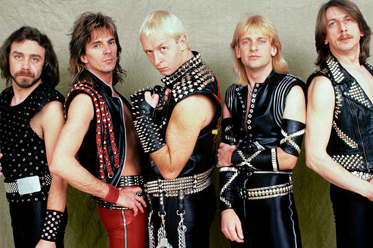

Banda de heavy metal formada en 1969 en Birmingham
| Año | Disco |
|---|---|
| 1976 | Sad wings of Destiny |
| 1978 | Stained class |
| 1978 | Killing machine |
| 1980 | British steel |
| 1982 | Screaming for vengeance |
| 1984 | Defenders of the faith |
| 1990 | Painkiller |
| Su último disco fué Firepower en 2018 | |